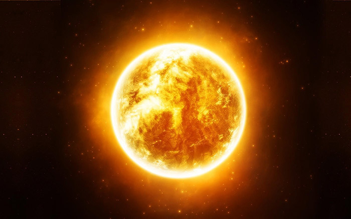
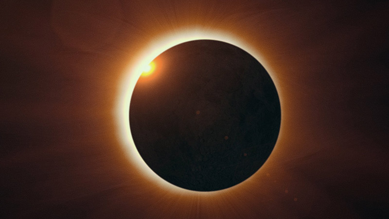

Нажмите на картинку для перехода на плутон


Солнце
Со́лнце — единственная звезда Солнечной системы. Вокруг Солнца обращаются другие объекты этой системы: планеты и их спутники, карликовые планеты и их спутники, астероиды, метеороиды, кометы и космическая пыль.
Солнечное излучение поддерживает жизнь на Земле (свет необходим для начальных стадий фотосинтеза), определяет климат.
Солнце принадлежит к первому типу звёздного населения. Одна из распространённых теорий возникновения Солнечной системы предполагает, что её формирование было вызвано взрывами одной или нескольких сверхновых звёзд.


| Возраст | ~4.6 млрд. лет |
| Температура на поверхности: | 5500 |
| Температура в центре: | 14 000 000 |
| Диаметр: | 109 земных |
| Масса: | 332 земных |
| Вторая космическая скорость: | 618 км/с |
| Классификация: | Желтый карлик |



Меркурий
Венера
Земля
Марс
Юпитер
Сатурн
Уран
Нептун